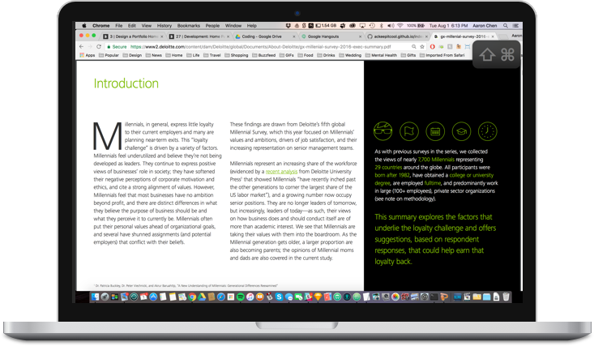

-
Knode
-

-
The Problem
-
Millennial job-hopping is a major problem within the industry, costing the U.S. economy $30.5 billion annually.*
Research Methodologies
Article Research in Millennial Turnover and Job Satisfaction
User Interviews with active job seekers, employed millennials, and a talent acquisition recruiter.
Fireside chat with Kathryn Minshew, CEO the Muse -
Market Analysis
-

-

-

-
Research Insights
-
Millennials are more inclined to stay at a company long-term when they are actively engaged and feel they have an impact on the company.*
Millennials want to contribute to the positive impact they believe business has on society, but in doing so, they wish to stay true to their personal values.
82% of millennials believe their personal values are shared by the organizations they work for where they have intention to stay for at least another five years.*
-
However, only 27% of millennials expect to stay in their current positions by 2020.
64% of senior millennials indicate that personal values have the greatest influence on their decisions, while 49% of junior millennials say the same.
The values that millennials associate best with are people treatment @ 26%, ethics @ 25% and customer focus @ 19%
To read more click: https://goo.gl/aMW6tY - 
-
The Approach
-
How might we invert the paradigm of the job search?
-
The Product
-
Knode provides the job seeker with an interactive experience to find companies that align with their personal values in order to build long-term employee engagement.
Target User — Millennial at mid–level actively seeking the right company fit. -
User Flow / Wireframes
-
Step 1:
Open up Knode webpage -

-
Step 2:
Enter Search Term -

-
Step 3:
Companies populate -

-
Step 4a:
Browse company profile -

-
Step 4b:
Search again or click another node to explore -
Step 5:
Apply! -
Finished Design
-

-

-

-

-
Conclusion
-
Knode was created as part of the UX Hackathon event by Aaron Chen, Alyssa Esteban, Anthony Virey, Ben Booker, and Boris Yu. The goal of the Hackathon was to design a product that redesigned the candidate experience. The event took place on 04.29.2017 at the JET Headquarters in Hoboken, NJ.
More information on the Hackathon can be found at: https://goo.gl/iq19w2
Judges at the UX Hackathon were Juan Sanchez (Director of UX, Jet.com), Travis Kessel (Head of Recruiting, Jet.com) and Sean Echevarria (Product and Research, Jet.com).
Team KNODE placed with special recognition in 4th place.